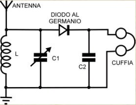
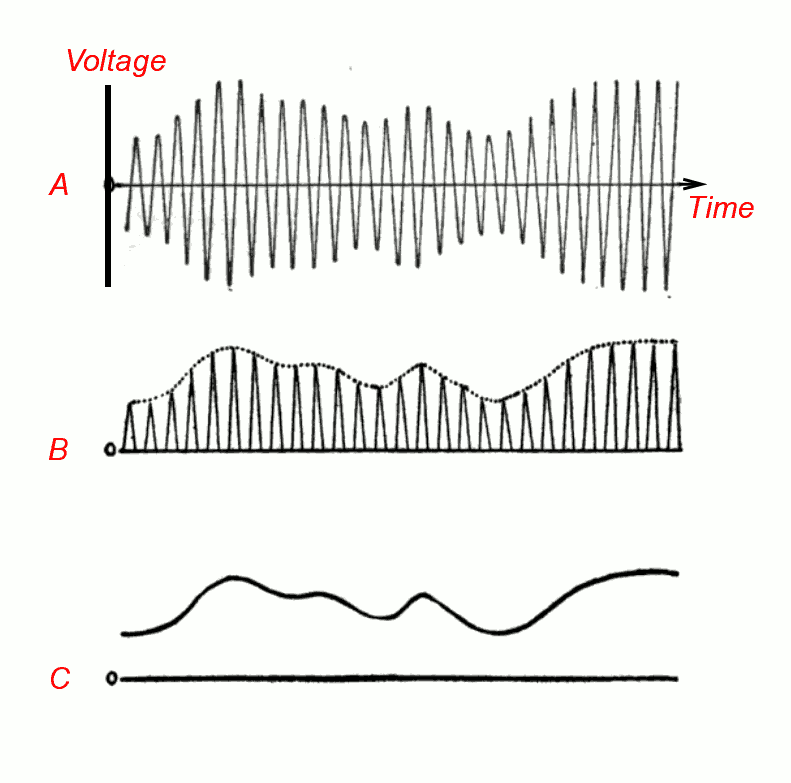

Le radio a cristallo di galena sono state inventate all'inizio del ventesimo secolo, frutto di una serie di scoperte che hanno costellato la fine del diciannovesimo secolo, durante l'epoca pioneristica delle trasmissioni radio. Questo tipo di ricevitori venivano utilizzati per ricevere segnali morse generati da potenti trasmettitori a spinterometro.
Uno dei primi ad utilizzare una radio al cristallo per rivelare segnali elettromagnetici fu il fisico indiano Jagadish Chandra Bose a cavallo del diciannovesimo e del ventesimo secolo, che riuscì a rivelare segnali nella banda delle microonde.
Anni più tardi, dopo i numerosi processi che hanno portato a raffinare le tecniche rivelative, il National Institute of Standards and Technology pubblicò un articolo intitolato "Construction and Operation of a Simple Homemade Radio Receiving Outfit" nel quale era descritto il procedimento per permettere a molte famiglie di costruire la propria radio a cristallo e di sintonizzarla su determinate frequenze nelle quali erano presenti trasmissioni su previsioni meteo, notizie e altro.
Il cristallo di galena, col tempo, tende ad ossidarsi e a compromettere il corretto funzionamento dello strumento. Le più moderne radio a cristallo sfruttano il germanio, che non presenta il problema dell'ossidazione offrendo una migliore qualità.
Attualmente le radio a cristallo sono utilizzate quasi solamente per scopi hobbistici e competitivi, dato che la semplicità di questo strumento non permise più di rivelare i segnali trasmessi dai sempre più raffinati e complicati trasmettitori moderni.
La radio è composta da un'antenna, un filtro passabanda composto da un induttore e un condensatore, un demodulatore (un diodo al germanio) e uno speaker ad alta impedenza. Solitamente sia l'induttore che il condensatore sono componenti variabili, permettendo così di variare la frequenza di sintonizzazione in un range più ampio.
Lo schema elettrico del rivelatore è riportato nella figura seguente.
 L'antenna converte l'energia del campo elettromagnetico variabile in corrente alternata: per questo motivo tanto più grande è l'antenna tanta più potenza è in grado di erogare. Solitamente vengono realizzate antenne filiformi lunghe decine di metri e sospese a diversi metri da terra.Il rivelatore necessita di un collegamento a terra a bassa impedenza per poter sfruttare la differenza di potenziale tra l'antenna e la terra.
Il circuito risonante consiste, come detto sopra, di un induttore variabile e di un condensatore variabile collegati tra loro. Questo circuito presenta un'alta impedenza per la frequenza desiderata e una bassa impedenza per tutte le altre frequenze: in questo modo le frequenze indesiderate passano oltre il circuito risonante e si "scaricano a terra" e la frequenza su cui è sintonizzato il circuito viene trasmessa al demodulatore.
La frequenza desiderata si calcola dai valori di $C$ e di $L$ con la seguente equazione:
f = \frac{1}{2 \pi \sqrt{LC}}
Il rivelatore al germanio consiste in un diodo che taglia una semionda del segnale oscillante modulato in ampiezza permettendo così di estrarre il segnale sonoro.
Brevemente, l'antenna rivela un segnale modulato in ampiezza (AM) che si estende simmetricamente attorno all'asse x. La configurazione del circuito risonante determina la frequenza centrale sulla quale si vuole estrarre il contenuto sonoro. Il rivelatore al germanio taglia la semionda negativa e un eventuale condensatore "alliscia" il treno di impulsi ad alta frequenza estrendo così il segnale sonoro.
